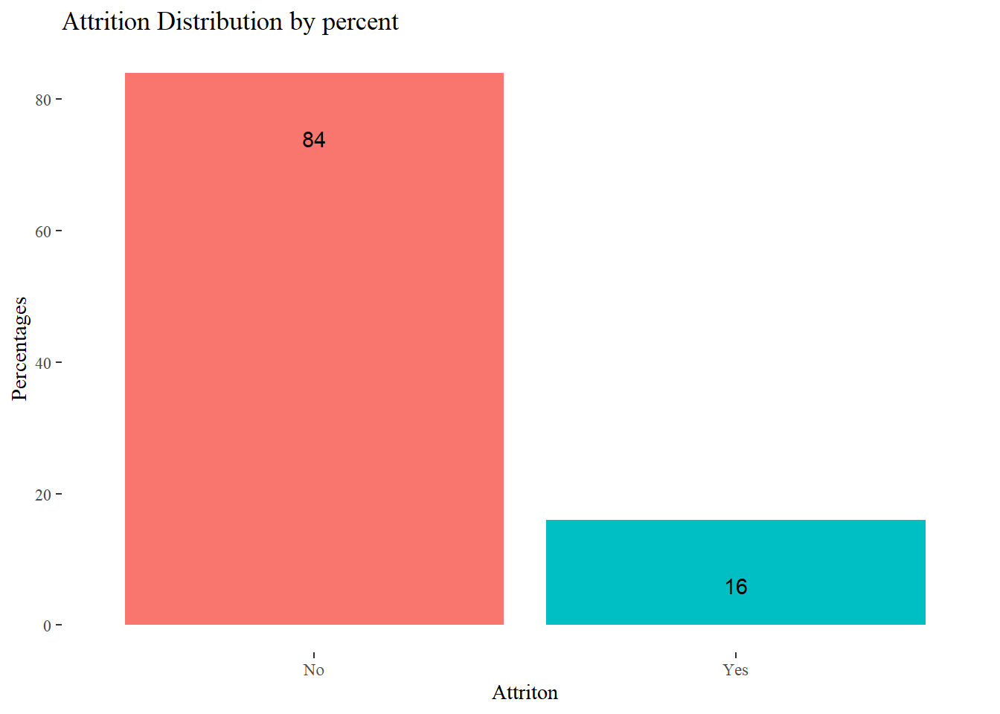
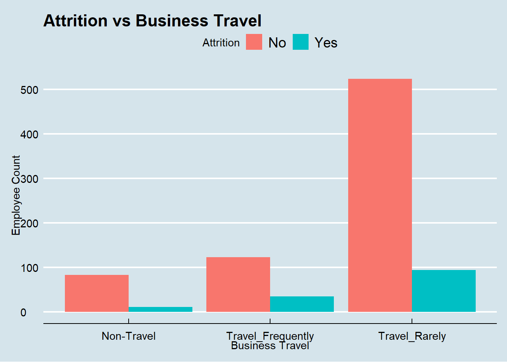
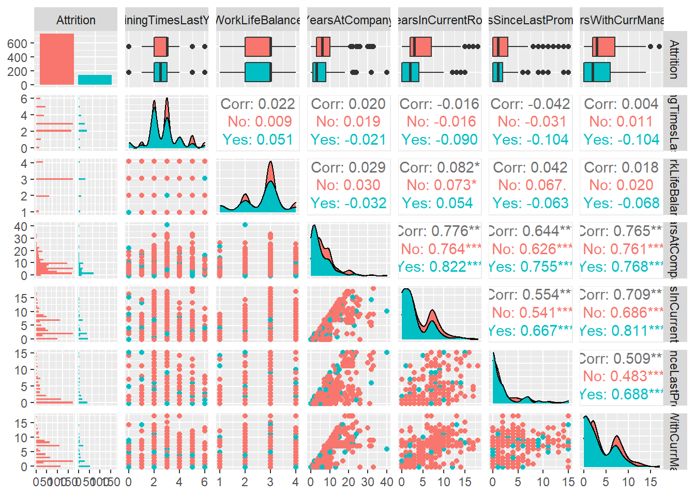
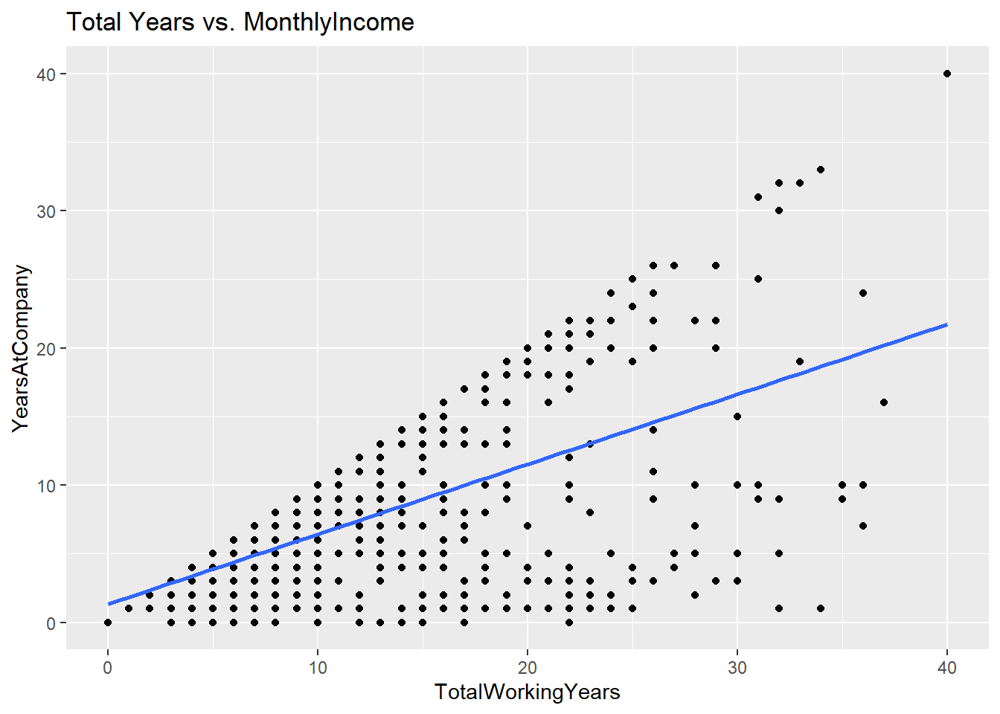
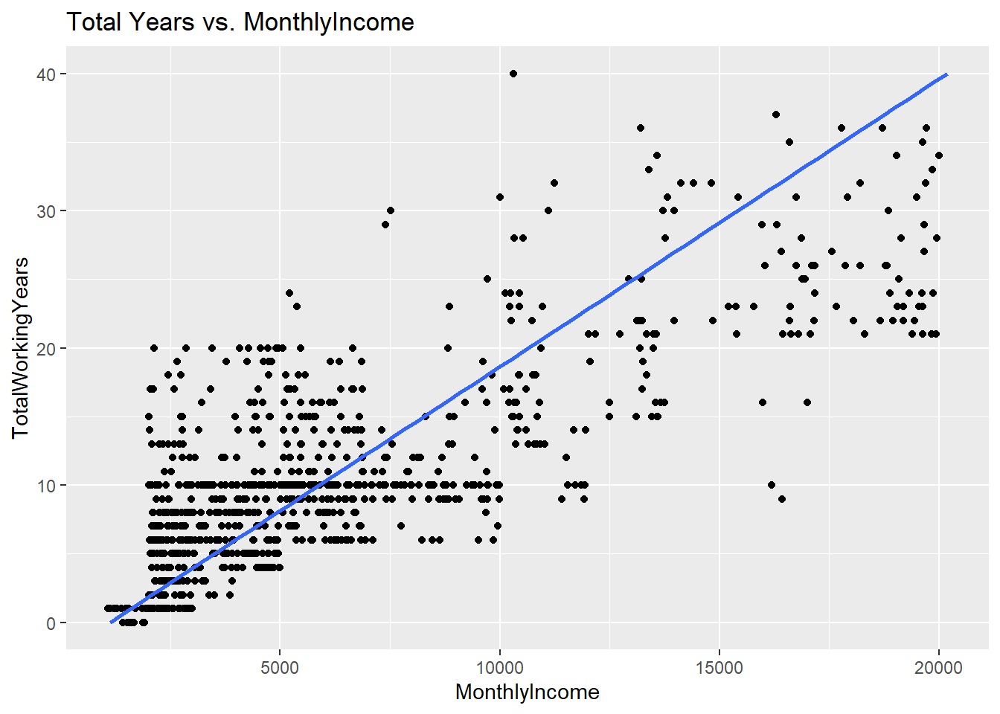

Frito Lay Analysis
Rayon M
7/30/2021
Project Objectives
- Classify Attrition
- Identify Trends within the Departments and Job Roles
- Predict Monthly Income
Methodology
This Analysis was conducted using the following methodology:
- Loaded the data set provided (CaseStudy2-data.csv)
- Performed Exploratory Data Analysis to identify key factors that leads to Attrition, and find explanatory variables for the Linear Regression Model.
- Used the Naive Bayes to achieve Classification
- Used Linear Regression to Predict the Monthly Income
Categorical Data:
- Attrition
- BusinessTravel
- Department
- EducationField
- Gender
- JobRole
- MaritalStatus
- Over18
- OverTime
Continuous Variables:
- Age
- DailyRate
- DistanceFromHome
- Education
- EmployeeCount
- EmployeeNumber
- EnvironmentSatisfaction
- HourlyRate
- JobInvolvement
- JobLevel
- JobSatisfaction
- MonthlyIncome
- MonthlyRate
- NumCompaniesWorked
- PercentSalaryHike
- PerformanceRating
- RelationshipSatisfaction
- StandardHours
- StockOptionLevel
- TotalWorkingYears
- TrainingTimesLastYear
- WorkLifeBalance
- YearsAtCompany
- YearsInCurrentRole
- YearsSinceLastPromotion
- YearsWithCurrManager
Import Data
Exploratory Data Analysis (EDA)
Explore factors that can lead voluntary employee turnover (Attrition). Identify the top three factors that contribute to turnover.
The business is also interested in learning about any job role specific trends that may exist in the data set. You can also provide any other interesting trends and observations from your analysis.
# Look at the structure of the data
str(employee_data) # 870 observations and 36 variables## 'data.frame': 870 obs. of 36 variables:
## $ ID : int 1 2 3 4 5 6 7 8 9 10 ...
## $ Age : int 32 40 35 32 24 27 41 37 34 34 ...
## $ Attrition : chr "No" "No" "No" "No" ...
## $ BusinessTravel : chr "Travel_Rarely" "Travel_Rarely" "Travel_Frequently" "Travel_Rarely" ...
## $ DailyRate : int 117 1308 200 801 567 294 1283 309 1333 653 ...
## $ Department : chr "Sales" "Research & Development" "Research & Development" "Sales" ...
## $ DistanceFromHome : int 13 14 18 1 2 10 5 10 10 10 ...
## $ Education : int 4 3 2 4 1 2 5 4 4 4 ...
## $ EducationField : chr "Life Sciences" "Medical" "Life Sciences" "Marketing" ...
## $ EmployeeCount : int 1 1 1 1 1 1 1 1 1 1 ...
## $ EmployeeNumber : int 859 1128 1412 2016 1646 733 1448 1105 1055 1597 ...
## $ EnvironmentSatisfaction : int 2 3 3 3 1 4 2 4 3 4 ...
## $ Gender : chr "Male" "Male" "Male" "Female" ...
## $ HourlyRate : int 73 44 60 48 32 32 90 88 87 92 ...
## $ JobInvolvement : int 3 2 3 3 3 3 4 2 3 2 ...
## $ JobLevel : int 2 5 3 3 1 3 1 2 1 2 ...
## $ JobRole : chr "Sales Executive" "Research Director" "Manufacturing Director" "Sales Executive" ...
## $ JobSatisfaction : int 4 3 4 4 4 1 3 4 3 3 ...
## $ MaritalStatus : chr "Divorced" "Single" "Single" "Married" ...
## $ MonthlyIncome : int 4403 19626 9362 10422 3760 8793 2127 6694 2220 5063 ...
## $ MonthlyRate : int 9250 17544 19944 24032 17218 4809 5561 24223 18410 15332 ...
## $ NumCompaniesWorked : int 2 1 2 1 1 1 2 2 1 1 ...
## $ Over18 : chr "Y" "Y" "Y" "Y" ...
## $ OverTime : chr "No" "No" "No" "No" ...
## $ PercentSalaryHike : int 11 14 11 19 13 21 12 14 19 14 ...
## $ PerformanceRating : int 3 3 3 3 3 4 3 3 3 3 ...
## $ RelationshipSatisfaction: int 3 1 3 3 3 3 1 3 4 2 ...
## $ StandardHours : int 80 80 80 80 80 80 80 80 80 80 ...
## $ StockOptionLevel : int 1 0 0 2 0 2 0 3 1 1 ...
## $ TotalWorkingYears : int 8 21 10 14 6 9 7 8 1 8 ...
## $ TrainingTimesLastYear : int 3 2 2 3 2 4 5 5 2 3 ...
## $ WorkLifeBalance : int 2 4 3 3 3 2 2 3 3 2 ...
## $ YearsAtCompany : int 5 20 2 14 6 9 4 1 1 8 ...
## $ YearsInCurrentRole : int 2 7 2 10 3 7 2 0 1 2 ...
## $ YearsSinceLastPromotion : int 0 4 2 5 1 1 0 0 0 7 ...
## $ YearsWithCurrManager : int 3 9 2 7 3 7 3 0 0 7 ...# display top 6 observations in the data
head(employee_data)## ID Age Attrition BusinessTravel DailyRate Department
## 1 1 32 No Travel_Rarely 117 Sales
## 2 2 40 No Travel_Rarely 1308 Research & Development
## 3 3 35 No Travel_Frequently 200 Research & Development
## 4 4 32 No Travel_Rarely 801 Sales
## 5 5 24 No Travel_Frequently 567 Research & Development
## 6 6 27 No Travel_Frequently 294 Research & Development
## DistanceFromHome Education EducationField EmployeeCount EmployeeNumber
## 1 13 4 Life Sciences 1 859
## 2 14 3 Medical 1 1128
## 3 18 2 Life Sciences 1 1412
## 4 1 4 Marketing 1 2016
## 5 2 1 Technical Degree 1 1646
## 6 10 2 Life Sciences 1 733
## EnvironmentSatisfaction Gender HourlyRate JobInvolvement JobLevel
## 1 2 Male 73 3 2
## 2 3 Male 44 2 5
## 3 3 Male 60 3 3
## 4 3 Female 48 3 3
## 5 1 Female 32 3 1
## 6 4 Male 32 3 3
## JobRole JobSatisfaction MaritalStatus MonthlyIncome
## 1 Sales Executive 4 Divorced 4403
## 2 Research Director 3 Single 19626
## 3 Manufacturing Director 4 Single 9362
## 4 Sales Executive 4 Married 10422
## 5 Research Scientist 4 Single 3760
## 6 Manufacturing Director 1 Divorced 8793
## MonthlyRate NumCompaniesWorked Over18 OverTime PercentSalaryHike
## 1 9250 2 Y No 11
## 2 17544 1 Y No 14
## 3 19944 2 Y No 11
## 4 24032 1 Y No 19
## 5 17218 1 Y Yes 13
## 6 4809 1 Y No 21
## PerformanceRating RelationshipSatisfaction StandardHours StockOptionLevel
## 1 3 3 80 1
## 2 3 1 80 0
## 3 3 3 80 0
## 4 3 3 80 2
## 5 3 3 80 0
## 6 4 3 80 2
## TotalWorkingYears TrainingTimesLastYear WorkLifeBalance YearsAtCompany
## 1 8 3 2 5
## 2 21 2 4 20
## 3 10 2 3 2
## 4 14 3 3 14
## 5 6 2 3 6
## 6 9 4 2 9
## YearsInCurrentRole YearsSinceLastPromotion YearsWithCurrManager
## 1 2 0 3
## 2 7 4 9
## 3 2 2 2
## 4 10 5 7
## 5 3 1 3
## 6 7 1 7# view the variables in the dataset to determine if there are any "NAs" or missing values.
gg_miss_var(employee_data)# The dataset did not have any missing or NA values. What trends exist within the data? What is the split between Attrition Yes and No?
attrition_split <- data.frame(employee_data %>% group_by(Attrition) %>% summarise(Count = n()))
attrition_split## Attrition Count
## 1 No 730
## 2 Yes 140# The "Attrition" variable contains 730 No and 140 Yes observations in the dataset.
# Calculate the percentage difference of the No vs. Yes observations.
# Use setDT from the data.table package to calculate the %.
attrition_percent <- setDT (employee_data)[, 100 * .N/ nrow(employee_data), by = Attrition]
attrition_percent$V1 = round(attrition_percent$V1)
ggplot(data = attrition_percent, mapping = aes(x = Attrition, y = V1, fill = Attrition))+
geom_bar(stat = "identity") +
geom_text(aes(Attrition, V1-10, label = V1), data = attrition_percent)+
xlab("Attriton")+
ylab("Percentages")+
ggtitle("Attrition Distribution by percent")+
theme_tufte()+
theme(legend.position = "none")
# Another option for displaying percentages
BarChart(Attrition, fill = (count) , data = employee_data)## >>> Suggestions
## BarChart(Attrition, horiz=TRUE) # horizontal bar chart
## BarChart(Attrition, fill="greens") # sequential green bars
## PieChart(Attrition) # doughnut (ring) chart
## Plot(Attrition) # bubble plot
## Plot(Attrition, stat="count") # lollipop plot
##
##
## --- Attrition ---
##
##
## Missing Values of Attrition: 0
##
##
## No Yes Total
## Frequencies: 730 140 870
## Proportions: 0.839 0.161 1.000
##
##
## Chi-squared test of null hypothesis of equal probabilities
## Chisq = 400.115, df = 1, p-value = 0.000# Summary:
# The data consists of 84% No's and 16% Yes's as it pertains to Attrition.Find where Attrition is highest among the Categorical Variables
# Attrition vs. Overtime
overtime_percent <- setDT (employee_data)[, 100 * .N/ nrow(employee_data), by = OverTime]
overtime_percent$V1 <- round(overtime_percent$V1)
colnames(overtime_percent)[2] = "Percent"
overtime_percent <- data.frame(overtime_percent)
overtime_percent$OverTime <- as.factor(overtime_percent$OverTime)
overtime_percent## OverTime Percent
## 1 No 71
## 2 Yes 29# 29% of all employees work Overtime
# 71% of all employees does not work Overtime
ggplotly(ggplot(data = employee_data) +
geom_count(mapping = aes(x = Attrition, y = OverTime, colour = Attrition))+
theme_economist()+
theme(legend.position = "none")+
ggtitle("Attrition vs. OverTime"))# 57% of persons who left the company were working overtime! This will be one of the factors that leads to Attrition
# Attrition was highest in the group of employees that worked overtime
# ggplot(data = employee_data, mapping = aes(y = OverTime))+
# geom_bar()+
# geom_text(aes(OverTime, label = Percent, Percent = Percent + 1000000), data = overtime_percent)+
# coord_flip()+
# scale_y_discrete(expand = c(0, 0))+
# scale_x_discrete(expand = c(0, 0))
BarChart(OverTime, by = Attrition , data = employee_data)## >>> Suggestions
## Plot(OverTime, Attrition) # bubble plot
## BarChart(OverTime, by=Attrition, horiz=TRUE) # horizontal bar chart
## BarChart(OverTime, fill="steelblue") # steelblue bars
##
##
## Joint and Marginal Frequencies
## ------------------------------
##
## OverTime
## Attrition No Yes Sum
## No 558 172 730
## Yes 60 80 140
## Sum 618 252 870
##
##
## Cramer's V (phi): 0.272
##
## Chi-square Test: Chisq = 64.383, df = 1, p-value = 0.000overtime_attrition <- BarChart(OverTime, by = Attrition , data = employee_data)## >>> Suggestions
## Plot(OverTime, Attrition) # bubble plot
## BarChart(OverTime, by=Attrition, horiz=TRUE) # horizontal bar chart
## BarChart(OverTime, fill="steelblue") # steelblue bars
##
##
## Joint and Marginal Frequencies
## ------------------------------
##
## OverTime
## Attrition No Yes Sum
## No 558 172 730
## Yes 60 80 140
## Sum 618 252 870
##
##
## Cramer's V (phi): 0.272
##
## Chi-square Test: Chisq = 64.383, df = 1, p-value = 0.000# overtime_attrition$freq %>% kable(escape = F, align = c("c","l","l")) %>%
# kable_styling(full_width =full_width)
# Heat map showing that a large number of the employees don't work overtime.
pal <- wes_palette("Zissou1", 100, type = "continuous")
ggplotly(employee_data %>%
count(Attrition, OverTime)%>%
ggplot(mapping = aes(x = Attrition, y = OverTime)) +
geom_tile(mapping = aes(fill = n))+
scale_fill_gradientn(colours = pal) +
scale_x_discrete(expand = c(0, 0)) +
scale_y_discrete(expand = c(0, 0)) +
coord_equal()+
theme_economist()+
ggtitle("Attrition vs. OverTime"))mosaicplot(Attrition~OverTime, data = employee_data, col=c("darkslategray4", "orange"), main ="Attrition vs Overtime", xlab = "Attrition", ylab = "Overtime", border = "black", las=0.5, shade=TRUE)ggplotly(ggplot(data = employee_data, mapping = aes(x = OverTime, fill = Attrition))+
geom_bar(position = "dodge"))# Attrition vs BusinessTravel
attrition_businesstravel <- ggplot(data = employee_data) +
geom_count(mapping = aes(x = Attrition, y = BusinessTravel, colour = Attrition))+
theme_economist()+
ggtitle("Attrition vs. Business Travel")
ggplotly(attrition_businesstravel)employee_data %>% count(Attrition, BusinessTravel)## Attrition BusinessTravel n
## 1: No Non-Travel 83
## 2: No Travel_Frequently 123
## 3: No Travel_Rarely 524
## 4: Yes Non-Travel 11
## 5: Yes Travel_Frequently 35
## 6: Yes Travel_Rarely 94# 15% of employees that traveled Rarely left the company
# 12% of employees that were Non-Travel left the company
# 22% of employees that were Travel_Frequently left the company
attrition_businesstravel2 <- employee_data %>%
count(Attrition, BusinessTravel)%>%
ggplot(mapping = aes(x = Attrition, y = BusinessTravel)) +
geom_tile(mapping = aes(fill = n))
ggplotly(attrition_businesstravel2)# The Highest Attrition percentage was from those who Traveled rarely - 22%. Hence, I don't think business Travel is a factor for Attrition.
#Business Travel has a lower Median for Attrition than non Attrition
#one department is seeing a high turnover # Attrition vs Department
attrition_department <- ggplot(data = employee_data) +
geom_count(mapping = aes(x = Attrition, y = Department, colour = Attrition))+
theme_economist()+
ggtitle("Attrition vs. Department")
ggplotly(attrition_department)employee_data %>% count(Attrition, Department)## Attrition Department n
## 1: No Human Resources 29
## 2: No Research & Development 487
## 3: No Sales 214
## 4: Yes Human Resources 6
## 5: Yes Research & Development 75
## 6: Yes Sales 59# 17% of those that left were from the Human Resources Department
# 13% of those that left were from the Research & Development Department
# 21% of that that left were from the Sales Department
attrition_department2 <- employee_data %>%
count(Attrition, Department)%>%
ggplot(mapping = aes(x = Attrition, y = Department)) +
geom_tile(mapping = aes(fill = n))+
theme_economist()+
ggtitle("Attrition vs. Department")
ggplotly(attrition_department2)# Do sales people work more overtime?
ggplotly(ggplot(data = employee_data)+
geom_bar(mapping = aes(x = Department, fill = OverTime, alpha = JobRole), position = "dodge") +
ggtitle("Overtime by Department")+
xlab("Department")+
ylab("Number of Employees")+
theme_economist()+
theme(legend.position = "none")
)# No. There is a higher percentage of people working overtime in the Research and Development Department - 29%
#65% of Overtime comes from the Research & Development Department
#32% of Overtime comes from the Sales Department
PieChart(Department, data = employee_data, hole = 0)
## >>> Suggestions
## PieChart(Department, hole=0) # traditional pie chart
## PieChart(Department, values="%") # display %'s on the chart
## BarChart(Department) # bar chart
## Plot(Department) # bubble plot
## Plot(Department, values="count") # lollipop plot
##
##
## --- Department ---
##
##
## Human Resources Research&Development Sales Total
## Frequencies: 35 562 273 870
## Proportions: 0.040 0.646 0.314 1.000
##
##
## Chi-squared test of null hypothesis of equal probabilities
## Chisq = 480.338, df = 2, p-value = 0.000# The Research and Development Department makes up 65% of the company. Department is not one of the Factors that leads to Attrition.
# What is the percentage of non-exempt people leaving the company versus full time?# Attrition v. EducationField
ggplotly(ggplot(data = employee_data) +
geom_count(mapping = aes(x = Attrition, y = EducationField, colour = Attrition))+
theme_economist()+
ggtitle("Attrition vs. EducationField"))employee_data %>% count(Attrition, EducationField) ## Attrition EducationField n
## 1: No Human Resources 11
## 2: No Life Sciences 305
## 3: No Marketing 80
## 4: No Medical 233
## 5: No Other 43
## 6: No Technical Degree 58
## 7: Yes Human Resources 4
## 8: Yes Life Sciences 53
## 9: Yes Marketing 20
## 10: Yes Medical 37
## 11: Yes Other 9
## 12: Yes Technical Degree 17# Attrition v. Gender
ggplotly(ggplot(data = employee_data) +
geom_count(mapping = aes(x = Attrition, y = Gender, colour = Attrition))+
theme_economist()+
ggtitle("Attrition vs. Gender"))employee_data %>% count(Attrition, Gender)## Attrition Gender n
## 1: No Female 301
## 2: No Male 429
## 3: Yes Female 53
## 4: Yes Male 87# There are more males working in the company than females.
# The attrition rate among the two Genders were approximately the same at 15%
# No indicative of Attrition# Attrition v. JobRole
ggplotly(ggplot(data = employee_data) +
geom_count(mapping = aes(x = Attrition, y = JobRole, color = OverTime))+
theme_economist()+
ggtitle("Attrition vs. JobRole"))# JobRole is not a factor for Attrition.
BarChart(JobRole, by=Department, data = employee_data)## Table output is vertical to fit in window, but > 30 rows
## To view the complete table, save the output
## to an object, e.g., b <- BarChart(...)
## then b$freq## >>> Suggestions
## Plot(JobRole, Department) # bubble plot
## BarChart(JobRole, by=Department, horiz=TRUE) # horizontal bar chart
## BarChart(JobRole, fill="steelblue") # steelblue bars
##
##
## Cramer's V: 0.933
##
## Chi-square Test: Chisq = 1514.047, df = 16, p-value = 0.000
## >>> Low cell expected frequencies, chi-squared approximation may not be accurateemployee_data %>% ggplot(mapping = aes(x = JobRole, fill = Attrition))+
geom_bar()Attrititon_table <- data.frame(employee_data %>% count(Attrition, JobRole))
Attrititon_table## Attrition JobRole n
## 1 No Healthcare Representative 68
## 2 No Human Resources 21
## 3 No Laboratory Technician 123
## 4 No Manager 47
## 5 No Manufacturing Director 85
## 6 No Research Director 50
## 7 No Research Scientist 140
## 8 No Sales Executive 167
## 9 No Sales Representative 29
## 10 Yes Healthcare Representative 8
## 11 Yes Human Resources 6
## 12 Yes Laboratory Technician 30
## 13 Yes Manager 4
## 14 Yes Manufacturing Director 2
## 15 Yes Research Director 1
## 16 Yes Research Scientist 32
## 17 Yes Sales Executive 33
## 18 Yes Sales Representative 24ggplot(data = Attrititon_table, mapping = aes(x = JobRole, y = n))+
geom_boxplot()ggplot(data = employee_data, aes(x = JobRole, y= Attrition, color = Attrition))+
geom_count()+
coord_flip()# Attrition v. MaritalStatus
ggplotly(ggplot(data = employee_data) +
geom_count(mapping = aes(x = Attrition, y = MaritalStatus, color = Attrition))+
theme_economist()+
ggtitle("Attrition vs. MaritalStatus"))employee_data %>% count(Attrition, MaritalStatus)## Attrition MaritalStatus n
## 1: No Divorced 179
## 2: No Married 352
## 3: No Single 199
## 4: Yes Divorced 12
## 5: Yes Married 58
## 6: Yes Single 70# Higher Attrition count among Single people
70+199## [1] 26970/269*100 # 26%## [1] 26.022370/140*100 #50%## [1] 5058+352## [1] 41058/410*100 # 14%## [1] 14.1463458/140*100 # 41%## [1] 41.4285712+179## [1] 19112/179*100 # 6%, ## [1] 6.70391112/140*100 # 8 %## [1] 8.571429ggplotly(ggplot(data = employee_data, mapping = aes(x = OverTime, y = MaritalStatus, fill = Attrition))+
geom_count()+
coord_flip()
)employee_maritalstatus <- employee_data[,c(3,19)]
view(employee_data)
mosaicplot(Attrition~MaritalStatus, data = employee_data, col=c("Blue", "red4", "Green"), main ="Attrition vs MaritalStatus", xlab = "Attrition", ylab = "MaritalStatus", las =1, border = "chocolate", shade = TRUE)# Attrition v. Over18
ggplotly(ggplot(data = employee_data) +
geom_count(mapping = aes(x = Attrition, y = Over18, colour = Attrition))+
theme_economist()+
ggtitle("Attrition vs. Over18"))# No significance to the Study. All observations are over18.Find where Attrition is highest among the Continuous variables
employee_data %>%
select (Attrition, YearsInCurrentRole, YearsSinceLastPromotion, YearsWithCurrManager) %>%
ggpairs(mapping = aes(color = Attrition))## `stat_bin()` using `bins = 30`. Pick better value with `binwidth`.
## `stat_bin()` using `bins = 30`. Pick better value with `binwidth`.
## `stat_bin()` using `bins = 30`. Pick better value with `binwidth`.
# Attrition looks to have the lowest median in the "Years in current role" variable and No Attrition have the highest, why?
# Attrition looks to have the lowest median in the "Years with Current Manager" and No Attrition have the highest, why?
# Attrition has a high correlation with "Years In current role" and Years with current manager? why? Overall the Correlation is 0.709 (Strong)
# Attrition has a medium correlation with "Years In current role" and Years since Last Promotion? why?
ggplot(data = employee_data, mapping = aes(x = YearsInCurrentRole, ..density..)) +
geom_freqpoly(mapping = aes(color = Attrition),binwidth = 1)# The lower the "Years In Current Role" variable the more likely there is attrition -- which makes sense because people left before spending a long time. What else is driving them to leave?
ggplot(data = employee_data, mapping = aes(x = YearsInCurrentRole, y = YearsAtCompany)) +
geom_point(position = "jitter")employee_data %>%
select(Attrition, YearsAtCompany, YearsInCurrentRole) %>%
ggpairs(mapping = aes(color = Attrition))## `stat_bin()` using `bins = 30`. Pick better value with `binwidth`.
## `stat_bin()` using `bins = 30`. Pick better value with `binwidth`.employee_data %>%
select (Attrition,TrainingTimesLastYear, WorkLifeBalance, YearsAtCompany, YearsInCurrentRole) %>%
ggpairs(mapping = aes(color = Attrition))## `stat_bin()` using `bins = 30`. Pick better value with `binwidth`.
## `stat_bin()` using `bins = 30`. Pick better value with `binwidth`.
## `stat_bin()` using `bins = 30`. Pick better value with `binwidth`.
## `stat_bin()` using `bins = 30`. Pick better value with `binwidth`.
# Years At Company and Years In current Role has a high correlation of 0.776; however, that's normal, as you need to be in the company to change roles. And the longer you stay the more likely.employee_data %>%
select (Attrition, RelationshipSatisfaction, StandardHours, StockOptionLevel, TotalWorkingYears) %>%
ggpairs(mapping = aes(color = Attrition))## `stat_bin()` using `bins = 30`. Pick better value with `binwidth`.
## `stat_bin()` using `bins = 30`. Pick better value with `binwidth`.
## `stat_bin()` using `bins = 30`. Pick better value with `binwidth`.
## `stat_bin()` using `bins = 30`. Pick better value with `binwidth`.
# The average total working years is lower for the employees that left than the average working years of employees that stayed. However, the highest value of working years is in the attrition field. Therefore, this is not a candidate for selecting attrition.
# RelationshipSatisfaction is not a factor for attrition. The average for relationship satisfaction is the same for those that stayed versus those that leave. However, 25% of the lower scores is in the Attrition column
#Stock Option is not a factor
#Standard Hours is not a factoremployee_data %>%
select(Attrition, PercentSalaryHike,PerformanceRating) %>%
ggpairs(mapping = aes(color = Attrition))## `stat_bin()` using `bins = 30`. Pick better value with `binwidth`.
## `stat_bin()` using `bins = 30`. Pick better value with `binwidth`.
#High correlation between Percent Salary Hike and Performance Rating. Interesting. Employees only provided a rating of 3 or 4. Why?
employee_data %>% select( Attrition, JobSatisfaction
,Age
,MonthlyIncome
,MonthlyRate
,NumCompaniesWorked) %>%
ggpairs(mapping = aes(color = Attrition))## `stat_bin()` using `bins = 30`. Pick better value with `binwidth`.
## `stat_bin()` using `bins = 30`. Pick better value with `binwidth`.
## `stat_bin()` using `bins = 30`. Pick better value with `binwidth`.
## `stat_bin()` using `bins = 30`. Pick better value with `binwidth`.
## `stat_bin()` using `bins = 30`. Pick better value with `binwidth`.# NumCompaniesWorked is not a factor for Attrition
# Employees with lower monthly incomes are more like to leave to the company. The average MonthlyIncome was way lower than those who stayed with the company. MonthlyIncome is a factor for Attrition
# MonthlyRate is not a factor for Attrition
# Age is not a factor for Attrition. There were more people within the same age groups that stayed with the company.
# Histogram of Age vs Attriton will prove this.
# Not enough evidence to suggest that JobSatisfaction is a factor for attrition.employee_data %>% select(
Attrition
,HourlyRate
,JobInvolvement
,JobLevel
,JobRole) %>%
ggpairs(mapping = aes(color = Attrition))## `stat_bin()` using `bins = 30`. Pick better value with `binwidth`.
## `stat_bin()` using `bins = 30`. Pick better value with `binwidth`.
## `stat_bin()` using `bins = 30`. Pick better value with `binwidth`.
## `stat_bin()` using `bins = 30`. Pick better value with `binwidth`.
## `stat_bin()` using `bins = 30`. Pick better value with `binwidth`.
## `stat_bin()` using `bins = 30`. Pick better value with `binwidth`.#Hourly rate is not a factor for Attrition. On average it is higher for those that left than those that stayed
#The median job involvement for males were lower than females
#JobInvolvement
ggplotly(ggplot(data = employee_data, mapping = aes(x = Attrition, y = JobInvolvement, colour = Attrition))+
geom_boxplot())employee_data %>% count(JobInvolvement)## JobInvolvement n
## 1: 1 47
## 2: 2 228
## 3: 3 514
## 4: 4 81BarChart(JobInvolvement, fill = (count) , data = employee_data)
## >>> Suggestions
## BarChart(JobInvolvement, horiz=TRUE) # horizontal bar chart
## BarChart(JobInvolvement, fill="greens") # sequential green bars
## PieChart(JobInvolvement) # doughnut (ring) chart
## Plot(JobInvolvement) # bubble plot
## Plot(JobInvolvement, stat="count") # lollipop plot
##
##
## --- JobInvolvement ---
##
##
## Missing Values of JobInvolvement: 0
##
##
## 1 2 3 4 Total
## Frequencies: 47 228 514 81 870
## Proportions: 0.054 0.262 0.591 0.093 1.000
##
##
## Chi-squared test of null hypothesis of equal probabilities
## Chisq = 624.023, df = 3, p-value = 0.000ggplotly(employee_data %>% ggplot(mapping = aes(x = JobInvolvement, fill = Attrition))+
geom_bar())# Job involvement is not a factor for Attrition. ggplot(data = employee_data, mapping =aes(x = MonthlyIncome, y= Attrition, fill = Attrition))+
geom_boxplot()+
coord_flip()+
theme_economist()+
xlab("Attriton")+ ylab("Monthly Income")+
ggtitle("Attrition vs Monthly Income")
BarChart(JobLevel, fill = (count) , data = employee_data)
## >>> Suggestions
## BarChart(JobLevel, horiz=TRUE) # horizontal bar chart
## BarChart(JobLevel, fill="greens") # sequential green bars
## PieChart(JobLevel) # doughnut (ring) chart
## Plot(JobLevel) # bubble plot
## Plot(JobLevel, stat="count") # lollipop plot
##
##
## --- JobLevel ---
##
##
## Missing Values of JobLevel: 0
##
##
## 1 2 3 4 5 Total
## Frequencies: 329 312 132 60 37 870
## Proportions: 0.378 0.359 0.152 0.069 0.043 1.000
##
##
## Chi-squared test of null hypothesis of equal probabilities
## Chisq = 440.218, df = 4, p-value = 0.000ggplotly(employee_data %>% ggplot(mapping = aes(x = JobLevel, fill = Attrition))+
geom_bar()+
ggtitle("Attrition vs Job Level")+
xlab("Job Levels")+
ylab("Number of Employees")+
theme_economist()
)# JobLevel is a factor for Attrition. As Job level increases, Attrition decreases. More Attrition occurred with folks at the lowest job level.
# 38% of the workforce is a Job Level 1. The Recommendation would be to assess your strong employees and Promote them as quickly as possible.employee_data %>% select(
Attrition
,Education
,EmployeeCount
,EmployeeNumber
,EnvironmentSatisfaction
) %>%
ggpairs(mapping = aes(color = Attrition))## `stat_bin()` using `bins = 30`. Pick better value with `binwidth`.
## `stat_bin()` using `bins = 30`. Pick better value with `binwidth`.
## `stat_bin()` using `bins = 30`. Pick better value with `binwidth`.
## `stat_bin()` using `bins = 30`. Pick better value with `binwidth`.
# Education is not a factor for Attrition
# EmployeeCount is not a factor for Attrition
ggplot(data = employee_data, mapping = aes( x = EmployeeCount))+
geom_boxplot()# EmployeeNumber is not a factor for Attrition
ggplot(data = employee_data, mapping = aes( x = EmployeeNumber))+
geom_boxplot()# EmployeeSatisfaction is not a factor for Attritionemployee_data %>% select(
Attrition
,DailyRate
,DistanceFromHome
,PercentSalaryHike
,PerformanceRating
) %>%
ggpairs(mapping = aes(color = Attrition))## `stat_bin()` using `bins = 30`. Pick better value with `binwidth`.
## `stat_bin()` using `bins = 30`. Pick better value with `binwidth`.
## `stat_bin()` using `bins = 30`. Pick better value with `binwidth`.
## `stat_bin()` using `bins = 30`. Pick better value with `binwidth`. # DailyRate is not a factor for Attrition
# DistanceFromHome is not a factor for Attrition
# PercentSalaryHike is not a factor for Attrition
# PerformanceRating is not a factor for Attritionggplot(employee_data, mapping = aes(x=BusinessTravel)) +
geom_bar(mapping =aes(color = Attrition), position = "dodge")#Non-Travel, Travel_Frequently, Travel_rarely
ggplot(employee_data, mapping = aes(x=BusinessTravel, y = DistanceFromHome)) +
geom_boxplot(mapping =aes(color = Attrition))
# people who work on average a further distance from home and don't travel have a high attrition!
ggplot(employee_data, mapping = aes(x=BusinessTravel, y = Department)) +
geom_tile(mapping =aes())+
coord_flip()employee_data %>%
count(BusinessTravel, Department) %>%
ggplot(mapping = aes(x = BusinessTravel, y = Department)) +
geom_tile(mapping = aes(fill = n))employee_data %>% select(Attrition
,TrainingTimesLastYear
,WorkLifeBalance
,YearsAtCompany
,YearsInCurrentRole
,YearsSinceLastPromotion
,YearsWithCurrManager) %>%
ggpairs(mapping = aes(color = Attrition))## `stat_bin()` using `bins = 30`. Pick better value with `binwidth`.
## `stat_bin()` using `bins = 30`. Pick better value with `binwidth`.
## `stat_bin()` using `bins = 30`. Pick better value with `binwidth`.
## `stat_bin()` using `bins = 30`. Pick better value with `binwidth`.
## `stat_bin()` using `bins = 30`. Pick better value with `binwidth`.
## `stat_bin()` using `bins = 30`. Pick better value with `binwidth`.
Classification Model
Naive Bayes
# Find the average accuracy, sensitivity, and specificity of the model. The sensitivity and specificity must both be above 60%.
master_acc <- numeric(100)
master_sensitivity <- numeric(100)
master_specificivity <- numeric(100)
master_seed <- numeric(100)
for(seed in 1:100)
{
set.seed(seed)
splitPerc = 0.50
Index = sample(1:dim(employee_data)[1],round(splitPerc * dim(employee_data)[1]))
Train = employee_data[Index,]
Test = employee_data[-Index,]
model_attrition_yesorno = naiveBayes(Train[,c("MonthlyIncome", "JobLevel", "OverTime")], factor(Train$Attrition, labels=c("No", "Yes")))
CM = confusionMatrix(table(factor(Test$Attrition, labels = c("No", "Yes")), predict(model_attrition_yesorno,Test[,c("MonthlyIncome", "JobLevel", "OverTime")])))
master_acc[seed] <- CM$overall[1]
master_sensitivity[seed] <- CM$byClass[1]
master_specificivity[seed] <- CM$byClass[2]
master_seed[seed] <- seed
}
mean(master_seed)## [1] 50.5mean(master_acc)## [1] 0.8448046mean(master_sensitivity)## [1] 0.8686501na.omit(max(master_specificivity))## numeric(0)
## attr(,"na.action")
## [1] 1
## attr(,"class")
## [1] "omit" # model = naiveBayes(train[,c(1,2)],train$Species)
# table(predict(model,test[,c(1,2)]),test$Species)
# CM = confusionMatrix(table(predict(model,test[,c(1,2)]),test$Species))
# masterAcc[j] = CM$overall[1]
# The mean Accuracy is 0.8544061
# The mean Sensitivity is 0.8688525
# The mean Specificity is 0.6470588Naive Bayes Model
Final Model used for the Naive Bayes classification
## Confusion Matrix and Statistics
##
##
## No Yes
## No 219 2
## Yes 33 7
##
## Accuracy : 0.8659
## 95% CI : (0.8185, 0.9048)
## No Information Rate : 0.9655
## P-Value [Acc > NIR] : 1
##
## Kappa : 0.2431
##
## Mcnemar's Test P-Value : 0.0000003959
##
## Sensitivity : 0.8690
## Specificity : 0.7778
## Pos Pred Value : 0.9910
## Neg Pred Value : 0.1750
## Prevalence : 0.9655
## Detection Rate : 0.8391
## Detection Prevalence : 0.8467
## Balanced Accuracy : 0.8234
##
## 'Positive' Class : No
## Competition dataset with No Attrition. Use the Naive Bayes Model to predict Attrition.
Exploratory Data Analysis for Regression Model
# Plot the following variables to see the correlation with MonthlyIncome
employee_data %>% select(MonthlyIncome, Age, Department, EducationField, JobLevel, JobRole, TotalWorkingYears, YearsAtCompany) %>%
ggpairs()## `stat_bin()` using `bins = 30`. Pick better value with `binwidth`.
## `stat_bin()` using `bins = 30`. Pick better value with `binwidth`.
## `stat_bin()` using `bins = 30`. Pick better value with `binwidth`.
## `stat_bin()` using `bins = 30`. Pick better value with `binwidth`.
## `stat_bin()` using `bins = 30`. Pick better value with `binwidth`.
## `stat_bin()` using `bins = 30`. Pick better value with `binwidth`.
## `stat_bin()` using `bins = 30`. Pick better value with `binwidth`.
## `stat_bin()` using `bins = 30`. Pick better value with `binwidth`.
## `stat_bin()` using `bins = 30`. Pick better value with `binwidth`.
## `stat_bin()` using `bins = 30`. Pick better value with `binwidth`.
## `stat_bin()` using `bins = 30`. Pick better value with `binwidth`.
## `stat_bin()` using `bins = 30`. Pick better value with `binwidth`.
## `stat_bin()` using `bins = 30`. Pick better value with `binwidth`.
## `stat_bin()` using `bins = 30`. Pick better value with `binwidth`.
## `stat_bin()` using `bins = 30`. Pick better value with `binwidth`.Regression Model to predict Monthly Income
# Goal: create a regression model that has an RMSE less than $3000
# Dependent Variable: MonthlyIncome
# Predictors/Experiment variable(s): Age and Total Working Years
numMSPEs = 1000
MSPEHolderModel4 = numeric(numMSPEs)
MSPEHolderModel5 = numeric(numMSPEs)
MSPEHolderModel10 = numeric(numMSPEs)
for (i in 1:numMSPEs)
{
index <- createDataPartition(employee_data$ID, p = .60, list = FALSE)
monthly_income_train <- employee_data[index, ]
monthly_income_test <- employee_data[-index, ]
#Model 4
monthly_income_model_fit4 = lm(MonthlyIncome ~ JobLevel+TotalWorkingYears, data = monthly_income_train)
monthly_income_Pred_4 = predict(monthly_income_model_fit4, newdata = monthly_income_test)
MSPE4 = mean((employee_data$MonthlyIncome - monthly_income_Pred_4)^2)
MSPE4
MSPEHolderModel4[i] = MSPE4
#Model 5
monthly_income_model_fit5 = lm(MonthlyIncome ~ JobRole, data = monthly_income_train)
monthly_income_Pred_5 = predict(monthly_income_model_fit5, newdata = monthly_income_test)
MSPE5 = mean((employee_data$MonthlyIncome - monthly_income_Pred_5)^2)
MSPE5
MSPEHolderModel5[i] = MSPE5
}
mean(MSPEHolderModel4)## [1] 40395966summary(monthly_income_model_fit4)##
## Call:
## lm(formula = MonthlyIncome ~ JobLevel + TotalWorkingYears, data = monthly_income_train)
##
## Residuals:
## Min 1Q Median 3Q Max
## -5477.0 -915.5 99.0 793.2 3801.3
##
## Coefficients:
## Estimate Std. Error t value Pr(>|t|)
## (Intercept) -1888.50 128.49 -14.697 < 0.0000000000000002
## JobLevel 3695.28 87.44 42.261 < 0.0000000000000002
## TotalWorkingYears 62.07 12.49 4.971 0.000000904
##
## Residual standard error: 1377 on 521 degrees of freedom
## Multiple R-squared: 0.9113, Adjusted R-squared: 0.911
## F-statistic: 2676 on 2 and 521 DF, p-value: < 0.00000000000000022confint(monthly_income_model_fit4)## 2.5 % 97.5 %
## (Intercept) -2140.92434 -1636.07318
## JobLevel 3523.50292 3867.05992
## TotalWorkingYears 37.54021 86.59602mean(MSPEHolderModel5)## [1] 38188225summary(monthly_income_model_fit5)##
## Call:
## lm(formula = MonthlyIncome ~ JobRole, data = monthly_income_train)
##
## Residuals:
## Min 1Q Median 3Q Max
## -5431.2 -1205.5 -433.7 1202.5 6667.0
##
## Coefficients:
## Estimate Std. Error t value Pr(>|t|)
## (Intercept) 7474.5 307.5 24.310 < 0.0000000000000002
## JobRoleHuman Resources -3700.6 643.8 -5.748 0.0000000155
## JobRoleLaboratory Technician -4176.5 376.6 -11.091 < 0.0000000000000002
## JobRoleManager 9872.8 473.8 20.836 < 0.0000000000000002
## JobRoleManufacturing Director 169.3 417.8 0.405 0.6855
## JobRoleResearch Director 8300.7 487.8 17.016 < 0.0000000000000002
## JobRoleResearch Scientist -4224.1 365.3 -11.565 < 0.0000000000000002
## JobRoleSales Executive -800.5 357.1 -2.241 0.0254
## JobRoleSales Representative -4861.9 469.7 -10.352 < 0.0000000000000002
##
## Residual standard error: 2040 on 515 degrees of freedom
## Multiple R-squared: 0.8077, Adjusted R-squared: 0.8047
## F-statistic: 270.3 on 8 and 515 DF, p-value: < 0.00000000000000022confint(monthly_income_model_fit5)## 2.5 % 97.5 %
## (Intercept) 6870.4269 8078.5277
## JobRoleHuman Resources -4965.4808 -2435.7814
## JobRoleLaboratory Technician -4916.2735 -3436.6583
## JobRoleManager 8941.8686 10803.6769
## JobRoleManufacturing Director -651.4509 990.0348
## JobRoleResearch Director 7342.2854 9259.0359
## JobRoleResearch Scientist -4941.6731 -3506.5151
## JobRoleSales Executive -1502.1379 -98.8643
## JobRoleSales Representative -5784.5734 -3939.1690testMSE4 = mean((monthly_income_test$MonthlyIncome - monthly_income_Pred_4) ^ 2)
testMSE4## [1] 1995349RMSE4 <- sqrt(testMSE4)
RMSE4## [1] 1412.568testMSE5 = mean((monthly_income_test$MonthlyIncome - monthly_income_Pred_5) ^ 2)
testMSE5## [1] 3928057RMSE5 <- sqrt(testMSE5)
RMSE5## [1] 1981.933Competition dataset with No MonthlyIncome. Use the Linear Regression Model to predict Monthly Income.
#Load in the competition dataset
monthly_income_comp_dataset = read.csv("C:/Users/Rayon/OneDrive/Documents/Doing DataScience/Doing Data Science/MSDS_6306_Doing-Data-Science/Unit 14 and 15 Case Study 2/CaseStudy2CompSet No Salary.csv")
#Use the Linear Regression Model to predict the MonthlyIncome for each observation.
# Model name = "model_attrition_yesorno"
monthly_income_comp_dataset$PredMonthlyIncome = predict(monthly_income_model_fit4, monthly_income_comp_dataset)
write.csv(monthly_income_comp_dataset[,c(1,36)], "Case2PredictionsMorris Salary.csv")employee_data %>% ggplot(mapping = aes(x = MonthlyIncome, y = Department))+
geom_point()+
geom_smooth(method = "lm" , se = FALSE)+
ggtitle("Total Years vs. MonthlyIncome")## `geom_smooth()` using formula 'y ~ x'#cor.test(employee_data$MonthlyIncome, as.factor(employee_data$Department))
employee_data %>% ggplot(mapping = aes(x = MonthlyIncome, y = Age))+
geom_point()+
geom_smooth(method = "lm" , se = FALSE)+
ggtitle("Total Years vs. MonthlyIncome")## `geom_smooth()` using formula 'y ~ x'employee_data %>% ggplot(mapping = aes(x = MonthlyIncome, y = EducationField))+
geom_point()+
geom_smooth(method = "lm" , se = FALSE)+
ggtitle("Total Years vs. MonthlyIncome")+
coord_flip()## `geom_smooth()` using formula 'y ~ x'employee_data %>% ggplot(mapping = aes(x = MonthlyIncome, y = JobLevel))+
geom_point()+
geom_smooth(method = "lm" , se = FALSE)+
ggtitle("Total Years vs. MonthlyIncome")## `geom_smooth()` using formula 'y ~ x'cor.test(employee_data$MonthlyIncome, employee_data$JobLevel)##
## Pearson's product-moment correlation
##
## data: employee_data$MonthlyIncome and employee_data$JobLevel
## t = 91.262, df = 868, p-value < 0.00000000000000022
## alternative hypothesis: true correlation is not equal to 0
## 95 percent confidence interval:
## 0.9449434 0.9575400
## sample estimates:
## cor
## 0.95164employee_data %>% ggplot(mapping = aes(x = MonthlyIncome, y = JobRole))+
geom_point()+
geom_smooth(method = "lm" , se = FALSE)+
ggtitle("Total Years vs. MonthlyIncome")+
coord_flip()## `geom_smooth()` using formula 'y ~ x'str(employee_data)## Classes 'data.table' and 'data.frame': 870 obs. of 36 variables:
## $ ID : int 1 2 3 4 5 6 7 8 9 10 ...
## $ Age : int 32 40 35 32 24 27 41 37 34 34 ...
## $ Attrition : chr "No" "No" "No" "No" ...
## $ BusinessTravel : chr "Travel_Rarely" "Travel_Rarely" "Travel_Frequently" "Travel_Rarely" ...
## $ DailyRate : int 117 1308 200 801 567 294 1283 309 1333 653 ...
## $ Department : chr "Sales" "Research & Development" "Research & Development" "Sales" ...
## $ DistanceFromHome : int 13 14 18 1 2 10 5 10 10 10 ...
## $ Education : int 4 3 2 4 1 2 5 4 4 4 ...
## $ EducationField : chr "Life Sciences" "Medical" "Life Sciences" "Marketing" ...
## $ EmployeeCount : int 1 1 1 1 1 1 1 1 1 1 ...
## $ EmployeeNumber : int 859 1128 1412 2016 1646 733 1448 1105 1055 1597 ...
## $ EnvironmentSatisfaction : int 2 3 3 3 1 4 2 4 3 4 ...
## $ Gender : chr "Male" "Male" "Male" "Female" ...
## $ HourlyRate : int 73 44 60 48 32 32 90 88 87 92 ...
## $ JobInvolvement : int 3 2 3 3 3 3 4 2 3 2 ...
## $ JobLevel : int 2 5 3 3 1 3 1 2 1 2 ...
## $ JobRole : chr "Sales Executive" "Research Director" "Manufacturing Director" "Sales Executive" ...
## $ JobSatisfaction : int 4 3 4 4 4 1 3 4 3 3 ...
## $ MaritalStatus : chr "Divorced" "Single" "Single" "Married" ...
## $ MonthlyIncome : int 4403 19626 9362 10422 3760 8793 2127 6694 2220 5063 ...
## $ MonthlyRate : int 9250 17544 19944 24032 17218 4809 5561 24223 18410 15332 ...
## $ NumCompaniesWorked : int 2 1 2 1 1 1 2 2 1 1 ...
## $ Over18 : chr "Y" "Y" "Y" "Y" ...
## $ OverTime : chr "No" "No" "No" "No" ...
## $ PercentSalaryHike : int 11 14 11 19 13 21 12 14 19 14 ...
## $ PerformanceRating : int 3 3 3 3 3 4 3 3 3 3 ...
## $ RelationshipSatisfaction: int 3 1 3 3 3 3 1 3 4 2 ...
## $ StandardHours : int 80 80 80 80 80 80 80 80 80 80 ...
## $ StockOptionLevel : int 1 0 0 2 0 2 0 3 1 1 ...
## $ TotalWorkingYears : int 8 21 10 14 6 9 7 8 1 8 ...
## $ TrainingTimesLastYear : int 3 2 2 3 2 4 5 5 2 3 ...
## $ WorkLifeBalance : int 2 4 3 3 3 2 2 3 3 2 ...
## $ YearsAtCompany : int 5 20 2 14 6 9 4 1 1 8 ...
## $ YearsInCurrentRole : int 2 7 2 10 3 7 2 0 1 2 ...
## $ YearsSinceLastPromotion : int 0 4 2 5 1 1 0 0 0 7 ...
## $ YearsWithCurrManager : int 3 9 2 7 3 7 3 0 0 7 ...
## - attr(*, ".internal.selfref")=<externalptr>cor.test(employee_data$MonthlyIncome, employee_data$YearsAtCompany)##
## Pearson's product-moment correlation
##
## data: employee_data$MonthlyIncome and employee_data$YearsAtCompany
## t = 16.622, df = 868, p-value < 0.00000000000000022
## alternative hypothesis: true correlation is not equal to 0
## 95 percent confidence interval:
## 0.4392594 0.5402018
## sample estimates:
## cor
## 0.491379employee_data %>% ggplot(mapping = aes(x = TotalWorkingYears, y = YearsAtCompany, position = "jitters"), position = "jitters")+
geom_point()+
geom_smooth(method = "lm" , se = FALSE)+
ggtitle("Total Years vs. MonthlyIncome")## `geom_smooth()` using formula 'y ~ x'
cor.test(employee_data$MonthlyIncome, employee_data$TotalWorkingYears)##
## Pearson's product-moment correlation
##
## data: employee_data$MonthlyIncome and employee_data$TotalWorkingYears
## t = 36.544, df = 868, p-value < 0.00000000000000022
## alternative hypothesis: true correlation is not equal to 0
## 95 percent confidence interval:
## 0.7509003 0.8034053
## sample estimates:
## cor
## 0.7785112employee_data %>% ggplot(mapping = aes(x = TotalWorkingYears, y = MonthlyIncome))+
geom_point()+
geom_smooth(method = "lm" , se = FALSE)+
ggtitle("Total Years vs. MonthlyIncome")+
coord_flip()## `geom_smooth()` using formula 'y ~ x'
#EDA CHUNK
ggplot(data = employee_data, mapping = aes(x = MonthlyIncome, colour = JobRole)) +
geom_freqpoly()## `stat_bin()` using `bins = 30`. Pick better value with `binwidth`.
# Observation, the people with salary less than $5,000 is greatest among the Research and Development Department, why?
# Are they younger?, Do they have lower job levels, do they work less hours? Did more people leave the company out of the Research & Development department? What department had the highest Attrition?
# Research Scientist are the highest among those making less than $5,000. They start out a little higher than other roles. but only less than 5 are making over $10,000
ggplot(data = employee_data, mapping = aes(x = MonthlyIncome, colour = JobRole)) +
geom_freqpoly()## `stat_bin()` using `bins = 30`. Pick better value with `binwidth`.employee_data %>% group_by(JobRole) %>% count(MonthlyIncome)## # A tibble: 850 x 3
## # Groups: JobRole [9]
## JobRole MonthlyIncome n
## <chr> <int> <int>
## 1 Healthcare Representative 4014 1
## 2 Healthcare Representative 4035 1
## 3 Healthcare Representative 4069 1
## 4 Healthcare Representative 4244 1
## 5 Healthcare Representative 4448 1
## 6 Healthcare Representative 4523 1
## 7 Healthcare Representative 4553 1
## 8 Healthcare Representative 4617 1
## 9 Healthcare Representative 4741 1
## 10 Healthcare Representative 4777 1
## # ... with 840 more rows# Monthly Income
ggplot(data = employee_data, mapping = aes(x= JobRole, y = MonthlyIncome, color = Attrition))+
geom_boxplot()#How does overtime affect this?
ggplot(data = employee_data, mapping = aes(x= JobRole, y = MonthlyIncome, color = OverTime))+
geom_boxplot()#How many people get overtime by jobrole? Only 65 research scientist gets overtime.
employee_data %>% group_by(JobRole) %>% count(OverTime)## # A tibble: 18 x 3
## # Groups: JobRole [9]
## JobRole OverTime n
## <chr> <chr> <int>
## 1 Healthcare Representative No 54
## 2 Healthcare Representative Yes 22
## 3 Human Resources No 21
## 4 Human Resources Yes 6
## 5 Laboratory Technician No 120
## 6 Laboratory Technician Yes 33
## 7 Manager No 41
## 8 Manager Yes 10
## 9 Manufacturing Director No 64
## 10 Manufacturing Director Yes 23
## 11 Research Director No 35
## 12 Research Director Yes 16
## 13 Research Scientist No 107
## 14 Research Scientist Yes 65
## 15 Sales Executive No 141
## 16 Sales Executive Yes 59
## 17 Sales Representative No 35
## 18 Sales Representative Yes 18# What does this look like for the daily rate?
ggplot(data = employee_data, mapping = aes(x= JobRole, y = DailyRate, color = Attrition))+
geom_boxplot()# What does this look like for the Monthly rate?
ggplot(data = employee_data, mapping = aes(x= JobRole, y = MonthlyRate, color = Attrition))+
geom_boxplot()# Attrition is high among those who make less that 5,000. The graph below shows this.
ggplot(data = employee_data, mapping = aes(x = MonthlyIncome, colour = Attrition)) +
geom_freqpoly()## `stat_bin()` using `bins = 30`. Pick better value with `binwidth`.# The average monthlyIncome was significantly lower in one Education Field than the others? Why?
# The average monthlyIncome was significantly lower in one Department than the others? Why?
ggplot(data = )
ggplot(data = employee_data, mapping = aes(x= EducationField, y = MonthlyRate, color = Attrition))+
geom_boxplot()